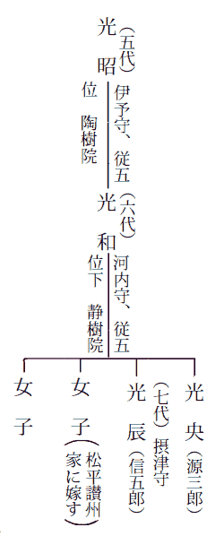

摂津守
――幼少のころから知恵づくことがおくれ、からだは健康であったが意力が弱く、人の助けがなければなに一つできなかった。つねに洟涎をながしながら、みずから拭くすべを知らなかったし、側近の者が怠ると失禁されることも
およそ右のような意味であるが、「つねにみずばなやよだれをながし」とか、「自分が誰であるかを、いちいち側の者に
――兄ぎみ源三郎（

藩史の系譜は右図のようになっている。
ここに話す出来事のあったとき、静樹院と呼ばれる光和は五十四歳で隠居しており、光辰の兄である源三郎光央は、二十六になっていたが、十五歳のとき精神異常という理由で廃嫡され、江戸麻布の下屋敷にこもっていた。摂津守光辰は十歳で世子に直り、十七歳で松平信濃守の女を
光和は五十二歳で隠居し、光辰が家督を相続して摂津守に任ぜられた。これは彼が十九歳のときであるが、――ここでちょっと注意しておきたいのは、彼の祖父も父も、藩の政治には殆んど無関心だったことだ。祖父の光昭は陶樹院と呼ばれるが、若いころから焼物に凝り、麻布の下屋敷に
これは領地の事情にもよると思われる。というのは、
▲城代家老 ▲江戸家老
望月吉太夫 秋元六郎左衛門
浜岡図書 望月内蔵允
▲国許年寄 ▲江戸年寄
坂倉斎宮 成瀬幸之進
浜岡十郎兵衛 田島鉄之助
市井主殿 安部久之進
▲側用人
浅利重太夫 栗栖采女
望月吉太夫 秋元六郎左衛門
浜岡図書 望月内蔵允
▲国許年寄 ▲江戸年寄
坂倉斎宮 成瀬幸之進
浜岡十郎兵衛 田島鉄之助
市井主殿 安部久之進
▲側用人
浅利重太夫 栗栖采女
ほかにも中老や寄合、その他の要職があるが、この話では右に挙げた諸家と、これらが五年交代で、きちんと伝承された点を記すだけでいいと思う。――こういう状態のなかで、光辰は家督相続をして摂津守に任じ、一年おいて、二十一歳の十月、初めての国入りをした。
初めての国入りだから、初入部の祝いから始まって、いろいろと儀式が多い。むろん国許では怠りなく準備をととのえていたのであるが、その大半は省略されてしまった。
――旅中のお疲れがまだ癒えないから。
側用人の浅利重太夫がそう発表し、諸士引見も略され、恩賞
諸士引見は略されたが、二の丸御殿で祝宴がひらかれ、目見以上の家臣が宴に列した。家格によってそれぞれ十人、または五人というふうに組んで御前に進み、
光辰は上段に坐っているだけであった。しもぶくれのおっとりした顔だちで、上背のあるいい躰格だが、眼つきや口許にしまったところがなく、疲れたような、寝不足なような、とらえどころのない、ぼうとした表情をしていた。うしろの左右に小姓が三人おり、一人は
上段のすぐ下に、三家老、側用人、年寄肝いりらの重臣たちが並んでいたが、城代家老の浜岡図書と、側用人の浅利重太夫とは、ときどき光辰のようすを見て、互いに
「構わずにおけば居眠りを始めます」
一刻ばかりでその
泉亭では、城代家老はじめ六人の重臣と酒宴があり、
「殿、――」と重太夫がたまりかねたように囁いた、「お気にめした者がございますか」
光辰は重太夫を見、袖で口のまわりを拭き、それから、重太夫の問いがなにを意味するのか思いだそうとして、上眼づかいに天床を見あげた。
「あの娘たちの中から」と重太夫は舌打ちをして囁いた、「お側に召す者を選んで下さるようにと、申上げておいた筈です」
光辰は途方にくれたような顔で、こころぼそそうに云った、「おれは、誰でもいい」
「お選び下さい」と重太夫は囁き声できびしく云った、「お気にいった者が一人や二人はいる筈です、お選びなさい」
重太夫はぐっと
「民部、――」と光辰は助けを求めるように振返って、小姓頭の永井民部に訊いた、「このおれは、誰だ」
「おそれながら」と民部が答えた、「当老松城五万六千石の御領主、摂津守光辰さまであらせられます」
「うん」光辰は頷いて重太夫に云った、「聞いたとおりだ、重太夫、おれは誰でもいい、みんなにくつろげと云え」
重太夫はまた舌打ちをし、城代の浜岡図書に耳うちをしたうえ、娘たちを一人ずつ、順に光辰の前へ進ませてみた。しかしその結果も同じことであって、重太夫が、いまの娘はどうかと訊くと、いい、と答える。次のはどうか、この娘はどうかと、訊くたびに「いい」と答える。そのたびに重太夫の顔色をうかがい、重太夫の気にいろう、褒められようと思っていることが、明瞭にあらわれていた。
「だめだな」と浜岡図書が云った、「こちらで選ぶよりしかたがあるまい」
「そう致しましょう」と重太夫が云った、「このみちだけは
永井民部がなにか囁き、光辰は袖でゆっくりと口のまわりを拭いた。
「民部、――」光辰が振返って訊いた、「おだれどのとは、誰だ」
「お口が過ぎます」と重太夫が云った、「静かにあそばせ」
光辰はしょんぼりと沈黙した。
その夜、浜岡図書の屋敷で重臣たちが寄合い、側室の選考をした。それは微妙な会議であった。側室にあがった者が世子を生めば、その親は大なり小なり勢力を得ることができる。けれどもまた、しかるべき家柄の者が、すすんで自分の娘を側室にあげるということはない。たとえ相手が藩主であっても、側室はやはり側室だからだ。――重臣たちはいろいろと候補者をあげたのち、吉田屋作兵衛の娘がよかろう、ということにきまった。吉田屋は藩の御用商人で、息子が二人に娘が三人いた。商人の娘なら、たとえ世子を生んだとしても、親が藩政の邪魔になるようなおそれはない。そこでその翌日、次席家老が吉田屋作兵衛を呼んで、その旨を話した。作兵衛はいったん家へ帰り、相談のうえ、次女のおたきをさしあげる、と答えて来た。それから浅利重太夫が医師を同伴して吉田屋へゆき、おたきに会って資格しらべをした。年は十七歳、容貌はまず十人並だが、
「手が荒れているようだが」と終りに重太夫が作兵衛に訊いた、「そのほうでは娘に水仕事などをさせるのか」
「家風でございまして」と作兵衛は答えた、「娘どもには芸ごとよりも、拭き掃除、炊事、裁ち縫いから、洗濯までさせるのが、しきたりでございます」
重太夫の唇にうす笑いがうかんだ。
「おくゆかしい家風だな」と重太夫はねばるような口ぶりで云った、「覚えておこう」
作兵衛は黙って辞儀をした。
三日のちに、おたきは坂倉斎宮の屋敷へはいった。斎宮は年寄役肝いりであるが、おたきを預かって殿中の作法を教えることになったのである。藩主の寝所へはいるには、その家によっていろいろの作法があったようだ。この藩では正夫人の場合はともかく、側室は控えの間で髪を解き、衣装は下のものまでぬいで、素裸になるのがきまりになっていたらしい。寝所の次が控えの間で、その三方を
側室が一糸もまとわず、髪も解いて寝所へはいるのは、凶器など持ちこむ危険を防ぐためだ、という通説がある。事実、諸家の秘録には
坂倉家でおたきを指南したのは、菊岡という老女であったが、御殿へはいると、二人の女中と三人の端下がおたきに付けられた。
十一月下旬、大沼で
大沼は城下町の西北二里ほどのところにある湖で、山岳地帯から流れこむ五筋の渓流の水を湛え、湖面に老松川の落ち口がある。光辰の行列は午前三時に出門、湖北をまわって
「あれは」光辰は馬を停め、
光辰のすぐうしろに永井民部がいた。
「存じません」と民部は馬を停めながら答えた、「みてまいりましょうか」
「重太夫が叱るだろう」と光辰は馬を進めながら云った、「あとでいい」
猟場には新しく仮屋が建ててあった。湖に面したその建物は二重で、光辰の席は一段高く、桟敷造りになっており、その下が重臣たちの席、また二重の下桟敷が、目見以上の者の席になっていた。
光辰の席には、老女の菊岡と五人の侍女に囲まれて、盛装のおたきが控えていて、浅利重太夫が光辰に披露し、おたきは定めの席へ進んだ。光辰はちょっと彼女を見たが、まったく関心がないようすで、すぐに眼をそらした。
天地はもうすっかり明けていた。
「おもしろいな」と光辰は面白くなさそうな声で云った、「では、
使わないと吉太夫が答えた。
「ふーん」と暫くして光辰が云った、「――武家の狩のようではないな」
すると重太夫が「殿」といって睨んだ。
「いや、武家のようだ」光辰は袖で口のまわりを拭きながら云い直した、「武家の狩のようだ、おもしろいな」
だがもうその猟には興味をなくしたらしく、光辰は眼をあげてあちらこちらを見まわした。湖上にはまだ靄がたなびいているが、朝日は対岸の山なみの上にのぼり、湖北につらなる山岳地帯を、片かげりにくっきりと照らしだしていた。光辰は振向いて永井民部を見、その山やまのうちひときわ高く、頂上に雪のある峰を指さした。
「あの雪のある山」と光辰は云った、「おれはあの山を、まえに見たことがあるか」
「初のお国入りですから、ごらんになるのは今日が初めてでございます」
「そうか」光辰は安心したように微笑し、口のまわりを拭いてから、威厳をつくろって訊いた、「あれはなんという山だ」
「
「民部はよく知っているな」
「私はお国許で生れ、十歳までこちらで育ったのです、――お口のまわりをどうぞ」
光辰は袖で口のまわりを拭いた。
猟が終ると、獲物を集めて、光辰に披露した。その日の宰領をしたのは物頭の和泉五郎兵衛という者で、獲物は鴨六百羽、
この大沼で捕れる鴨は、肥えているのと美味とで近国第一といわれ、毎年十二月には将軍家へ献上するし、その季節になると、鴨を
なるほど鴨はうまかった。汁椀の中には、
光辰はもっと欲しかった。腹もまだすいていたので、
「重太夫」と光辰は悲しげに云った、「みんなにくつろげと云え」
重太夫は軽く低頭しながら、舌打ちをした。
「まるで五六歳の子供だ」と重太夫は望月吉太夫に囁いた、「江戸で
「お顔だちは源三郎（光央）さまとよく似ておられるようですな」
「性質が似なくて幸いです」と重太夫は酒をすすりながら云った、「源三郎さまにはみな肝をひやしましたからな」
「いかにも」と吉太夫はまじめに頷いた、「いかにも」
その夜、おたきは二の丸御殿の寝所へあがった。老女菊岡の付添いで、作法どおり、控えの間で髪を解き、はだかになり、寝所へはいった。そして、おたきが
初めての夜から七夜、菊岡も控えの間に宿直をした。それはおたきから「はい」という返辞を聞くためで、七夜めの明けがたにその返辞があり、それからは規則どおり、宿直をせずに退出するようになった。「はい」という返辞がなにをあらわすものか、改めて記す必要はないだろう。翌年の正月から、おたきは二の丸御殿に移って、正式にお部屋さまと呼ばれることになった。
おたきは光辰に与えられた白小袖に、白の帯をしめた姿で、侍たちの宿直部屋と、女中たちの控えの間とを、交互に、よくよくうかがってから褥の上へ戻った。
「いいか」と光辰が囁いた。
「はい」とおたきが答えた。
光辰は「やすめ」と囁いた。
褥は二つあり、どちらも厚く重ねて、広く、大きい。おたきは礼をして自分の褥にはいり、光辰は起き直った。時刻は夜の十二時すぎ、火を置かないので、寝所の空気はひどく冷えていた。光辰は
それはおたきが
――黙っていてくれるか。
初めての夜、光辰はおたきに云った。
――家臣たちに知られると困る、重太夫に知られると叱られるから、誰にも云わないでもらいたいのだ、黙っていてくれるか。
おたきは黙っていると約束した。
学問をするのに、どうして家臣を憚るのか。こんな深夜に隠れてしないで、なぜ昼のうちにしないのか。おたきにはまったく理解できなかった。もちろんなにか
――なんというおいたわしいことを。
とおたきは思い、眼をそむけたものであった。
殿さまの頭が満足でないから、御家臣たちがばかにしているのだ。それにしても、五万六千石の藩主でありながら、なんという気の毒な方だろう。誰か五人や十人、味方になってあげる人はないのだろうか、などと思っていたのである。しかし、日が経つにしたがって、おたきの疑いはべつの方向に変った。
――殿さまはばかをよそおっているのではないか。
或るときふと、そういう考えがうかんだのである。
おたきは七夜めのあとで、「はい」という返辞を老女にしたが、それは事実ではなかった。光辰がどうしてもおたきに触れようとしないので、彼女は思いきって自分の立場を光辰に訴えた。
――いや、決して嫌いではない、おれはおまえが好きなようだ。
光辰はそう答えた。好きだとは思うが、まだそういう気持になれない。いつかそういう気持になるだろうから、それまで待っていてくれ、菊岡には「そうなった」と答えておけばいい、光辰がそう云うので、老女にはそのとおり答えたのであった。そのときおたきはひじょうに嬉しかった。光辰の言葉にはしんじつが感じられたし、それ以上に、自分を人間らしく扱ってくれたことが嬉しかったのだ。そうして、夜半に読書する姿を見ているうちに、ひるま家臣たちに対するような、おろかしいようすのないことに気がついた。三十余日のあいだ一夜も休まず、一刻半か二刻ほど、寝衣のまま畳へじかに坐って、殆んど身じろぎもせずに本を読む。春とはいっても正月から二月は寒さがきびしい、火のけのない寝所はことに冷える。その中でひっそりと、しかも熱心に読書している姿には、むしろ常人にない
おたきは本当のことが知りたくなり、その欲望を抑えることができなくなった。彼女は思いきって、大胆にそのことを光辰に訊いた。
――わたくしも申上げなければならないことがございます。
彼女はさきに告白した。おたきは吉田屋の娘ではない、伊部村の貧しい百姓の家に生れ、十二のときから吉田屋に奉公していた。そしてお城から「側室をあげるように」という沙汰があったとき、二女のおたきの身代りにされたのである。吉田屋作兵衛は御用商で、家中のことに詳しかったし、光辰がおろかだということも知っていた。自分の娘をあげるに忍びないため、金を代償に因果を含め、彼女を娘として城へあげたのであった。
――うちは貧乏のうえに子供が多いので、それだけのお金があれば助かりますし、御主人の頼みですから断わることができなかったのです。
年は同じだが、自分の名はみちというのである。というふうに語った。光辰は首をかしげ、眉をしかめながら、黙って聞いていて、聞き終ってからも、暫くなにも云わなかった。
――ひどくこみいっているな。
おれにはそういうこみいった話はよくわからない、と光辰は頭を振りながら云った。しかしおれはおまえが好きだ、おまえのほかには誰も欲しいとは思わない、それでいいだろう、とおたきの顔を見まもった。
おたきは光辰のようすをつくづくと見た。彼女の話を理解しようとして、首をかしげ、眉をしかめて聞きいった表情は、作ったものではないようであった。こんな簡単なことが本当にわからないのだろうか、おたきがそう思っていると、光辰は袖で口のまわりを拭きながら、吃り吃り云った。
――おれはこのとおりの人間だ、おれのおろかさはよそおっているものではない、けれども、家臣たちの考えているほどおろかでもないつもりだ、とにかく、こうやって勉強しているんだから、そのうちに少しは頭がよくなると思う。
そして微笑しながら、おれはこうみえても辛抱づよいんだよ、と云った。
おたきはいま褥の中から、光辰の読書に熱中している姿を見て、そのときの言葉を思い返しながら、やはりそれが光辰の本心であろう、と心の中でうなずいた。自分が人より知能のおくれていることを知り、人並になろうとしてひそかに努力している。それが事実だろうと思い、いたわしさと哀憐の情で胸がいっぱいになった。
三月になってまもなく、光辰は十人ばかりの供を
「鹿だ」と光辰は叫んだ、「あそこに鹿がいる、生きた鹿だ」
そして、
うしろで「殿」と叫ぶのが聞えた。殿、なりませんぞ、殿。だが光辰は馬に鞭を当てた。狭い
光辰は鹿を見たのだ。みごとな枝角と、
その辺で鹿を見失った。丘を越えて下るまでは、百五十歩ばかり先に、その枝角と、からだの斑毛が見えていたが、下りきったところから松の雑木林になり、そこで鹿は見えなくなった。
光辰は一刻ちかくも迷い歩いた。ときどき木のま越しに大沼が見え、それをめあてに歩いた。細い踏みつけ道を
「――三年待ったとて同い年ゃ同い年」
まのびのした、舌ったるい調子で、ゆっくりとうたっているのである。
「――七年待ったとて同い年ゃ同い年」
光辰はそっちへ歩いていった。
雑木林の端が、切崩された
「休みたいな」と光辰は
彼は雑木林の中を戻り、およその見当をつけて、そっちへおりていった。
まもなく、光辰はその小屋の一つで、老婆と話しながら茶を
「お茶はございません」と初めに老婆が云った、「お茶などはとてもわたしどもの手にははいりません、桑茶でよろしゅうございますか」
光辰が飲んでいるのはその桑茶であった。それは桑の葉を陰干しにしたものだそうで、中風除けにもなるということだったが、ひなた臭くておかしな味のする、なんとも妙な飲み物であった。
「――二十年待ったとて同い年ゃ同い年」
裏のほうでまだ唄の声がしていた。
「お侍さまはお城の方ですか」と老婆が
「そうではない」光辰は口のまわりを拭きながら云った、「裏でうたっているのはこの土地の唄か」
「あれは市兵衛さんといって、気が狂ってるんですよ」と老婆がちぐはぐな返辞をした、「お城の方でないとすると旅のお方ですか」
「まあそうだ」と光辰が云った、「あの老人がきちがいだって」
「
「どうして、自分の田や畑が、なくなったんだ」
「いま云ったとおり、川辺が鴨猟のお止め場になったからです」
「お止め場とはどういうことだ」
老婆は布切で眼脂を拭きながら語った。
いま鴨の猟場になっている処は川辺村といって、三つの部落に五十余戸の農家があった。農作と漁猟を兼ねていたが、五年まえ、藩侯の猟場として「お止め場」に指定され、五十余戸ぜんぶが立退きを命ぜられた。――お止め場は重臣の直轄となり、郡奉行の支配で、その許しを得なければ、立入ることができなくなった。土地を追われた五十余戸のうち、十戸ばかりは他へ移住したが、残りの四十余戸はこの伊部村へ仮小屋を建て、その日ぐらしの生活を始めた。そこは瑠璃光寺の寺領で、地代なども不要だったし、鴨の猟期には猟人の役を命ぜられるため、一戸について十俵から十五俵までの米が給されたから。それともう一つ、かれらは何代もその土地に住んでいたので、大沼のそばをはなれることができないのであった。
「
「その、お止め場というのは」光辰は少し考えていて訊いた、「ここの領主のために使われるのか」
「だからお止め場でございましょうがね」
光辰は口のまわりをゆっくりと拭き、途方にくれたような眼つきで、その狭くて暗い小屋の内部や、老婆の顔を眺めやり、やがて、持っていた欠け茶碗をそこへ置いた。
「その」光辰は立ちあがって、なにか云いかけたが、思うことが口に出ないようすで、「ぞうさになった」と礼を云った、「休ませてもらって、茶を馳走になって、うれしかった、またいつか会おう」
「お礼なんぞ云われちゃ恥ずかしいですよ」と老婆は云った、「また通りかかったらおよりなさいまし」
光辰は外へ出ると、少し戻って、裏の空地を見やった。そこでは、――市兵衛というあの老人が、さっきと同じように
「――五十年待ったとて、同い年ゃ同い年、六十年待ったとて、同い年ゃ同い年」
光辰は塗笠を手に持ったまま、なにか荷物でも背負ったような足どりで、そこを歩み去った。
城へ帰ると浅利重太夫に叱られた。
はぐれた供の者たちとは、瑠璃光寺の山門の前で会ったが、案内役の渡辺半助が城へ使いを走らせたので、城からも捜索の人数が出された。重太夫は鹿の話を信用せず、光辰が計画的に供の者をまいた、というふうに疑っているらしく、容赦のない調子で問い詰めた。すると永井民部が「鹿を見た」と云った。
「私は殿のすぐうしろにおりました」と民部は云った、「殿が鞭でさされましたとき、二三十間かなたの杉の木陰に鹿がいて、そのまますばやく、森の奥へ走りこむのを認めました」
「すっとだ」と光辰は手まねをした、「こんなふうに、すっと、森の奥のほうへ」
「お口数が過ぎます」と重太夫は睨みつけ、光辰の口のあたりを指さした、「お拭きあそばせ」
そして、光辰が口のまわりを袖で拭こうとすると「懐紙」と云いながら、自分のふところを押えてみせた。光辰はしょげた顔つきになり、ふところ紙を取り出しながら、左手の袖で
「大切なおん身をもって供にはぐれ、道に迷うなどとは御軽率もはなはだしい」と重太夫は叱った、「おん身に万一の事でもあったら取返しはつきませんぞ、御幼時ならともかく、今後はきっとお慎みあそばせ」
「民部」と光辰は永井民部に訊いた、「――おれは誰だ」
「当老松城主にして」と重太夫が民部より先に激しい調子で云った、「五万六千石の御領主、摂津守光辰さまです、まだそれがおわかりにならないのですか」
「おれが領主なら」と光辰は吃りながら云った、「自分の領内を歩くのに、それでも危険なことがあるのだろうか」
重太夫はするどく
その夜半、――例のように読書を始めようとしたとき、光辰は無意識に鼻唄をうたった。伊部村のあの狂老人のうたった唄である。おたきは自分の褥の中で聞いていた。うたうといってもむろん囁き声だし、本人が意識していないのだから、殆んど文句は聞きとれない筈であるが、おたきはびっくりしたように、起きあがって光辰のほうへすり寄った。
「どうしてその唄を御存じなのですか」
光辰は振向いておたきを見た。
「七年待ったとて、といういまの唄です」とおたきが囁いた、「どうしてそれを御存じなのですか」
「おれがうたったか」
「まえから御存じなのですか」
「いや、今日聞いたのだ」と光辰は云った、「伊部村というところで、気の狂った老人がうたっているのを聞いて、節も文句も単純なので覚えてしまったらしい、おまえも知っているのか」
「はい」おたきは俯向きながら、口の中で云った、「その気の狂った年寄は、市兵衛と申しまして、わたくしの母方の祖父でございます」
光辰はちょっと黙った。
「その」と暫くして光辰が訊いた、「その、あの唄は古くからうたわれていたのか」
「はい、節は古くからの野良唄ですけれど、文句は祖父のでたらめでございます」
「妙な文句だと思った」
「頭がおかしくなってからうたいだしたものですから」
「終りがあるのか」
「死ぬまで待ったとて、――というのがおしまいで、またはじめの、三年待ったとてに返りますの」
光辰は沈黙し、やがて云った、「時間が惜しい、また話そう」
おたきは褥へ戻った。
光辰は乗馬と槍が好きで、毎日、午前に馬をせめ、午後は槍の稽古をした。どちらも好きなわりに上達せず、乗馬のほうはともかく、槍の稽古では指南役が手をやいていた。江戸で槍を教えたのは介原小藤次という者であるが、国許へ来てからは永井民部が相手役を勤め、毎日一刻は欠かさず稽古をした。――遠乗りの事があってからまもなく、槍の稽古をしながら、民部が声をひそめて光辰に話しかけた。そこは二の丸御殿に付属した藩主専用の稽古所で、広さは十間に二十間ほどあり、そのときは小姓の者が三人控えていた。民部は光辰を巧みに誘導して、小姓の者たちからはなれながら、ごく低い声で話しかけたのであった。
「御本心をおあかし下さい」民部は掛け声をあげ、右へ位置を変えながら云った、「どうなさるおつもりですか、事をお始めになるのはいつのことですか」
光辰はけげんそうに民部を見た。
「お槍がさがります」と民部は注意をし、高く掛け声をあげて、さらに右へまわりこみながら囁いた、「私はお側へあがって以来ずっと、殿のごようすを拝見してまいりました、そしていつかはその御仮面をぬいで、事をお始めになるにちがいないと信じておりました」
光辰は当惑したように民部の顔を見まもり、民部は大喝して突をいれた。光辰は危うく身を
「突をおいれ下さい」と民部が囁いた。
光辰は突をいれた。民部は大きく左へひらき、それからまた
「このたびのお国入りには、なにごとかあそばすと思っていました」と民部は云った、「先日の遠乗りに、殿が御
光辰は槍をおろした、「民部」と云って、困惑のあまり泣きそうな顔になった、「おれは、鹿を見た、そして道に迷った」
「槍をおあげ下さい」
「迷って、疲れて、喉が渇いた」と光辰は
民部はじっと光辰の眼をみつめた。
「重太夫には云わないでくれ」と光辰は囁いた、「おれは疲れて、喉が渇いていた、それでちょっと寄って、休んで、へんな茶を啜っただけだ、それだけだ、本当だ、民部、――重太夫に知れるとまた叱られてしまう、小屋へ寄ったことは黙っていてくれ、黙っていてくれるな、民部」
「どうぞお槍を」と云って、民部は光辰の槍を受取りながら、囁いた、「御寝所へ差上げるものがございます、ごらんになりましたらすぐお焼き捨て下さるよう、――私は一命を
光辰は気のぬけたような眼で、ぼんやりと民部の顔を見ていた。
それから数日のちの夜、一綴の書類が寝所へ届けられた。
誰が入れたかわからなかった。光辰が読書のために起きるまえに、宿直の間の西側の
「時刻か」と光辰が訊いた。
おたきは身ぶりで制止し、そっと立ちあがって襖際へゆくと、そこに置いてある書類を取って戻った。
「いまこれを」とおたきは囁いた、「宿直の間から入れた者がございます」
光辰は起き直った。受取った書類をざっとめくってみ、「寝ておいで」と云った。おたきは自分の褥へはいり、光辰は立ちあがって、雪洞をひきよせて坐った。
それは光辰の祖父で、陶樹院といわれる五代光昭から今日までの、重臣たちの私曲を記したものであった。藩主を敬して遠ざけたうえ、世襲の重臣たちが交代で政治を支配し、年々一万石以上に当る横領を続けて来た。その例を詳しく列記してあるが、「お止め場」も一例として挙げてあった。鴨は猟ごとに二万羽ちかく捕れる、少ない年でも一万羽を下らないし、名物として知られているため、高い値段で
――かれらがいかに窮乏しているかは、御自身でごらんになったとおりである。
そういう注も加えてあった。
また、これらの事は代々の側用人である浅利、
光辰はおたきのほうへ振向いた。
「起きているか」
「はい」と答えておたきは起き直った。
「話すことがある」と光辰は囁いた、「宿直のようすをみてくれ」
おたきはそっと立ちあがった。そして宿直の間のようすを入念にうかがい、戻って来て光辰の脇に坐りながら、みな眠っているようだと答えた。
「困ったことができた」と光辰は口のまわりを拭きながら、持っている書類を見せた、「この書き物なんだが、おまえ文字が読めるか」
「仮名文字だけでございます」
「ではざっと話して聞かそう」
光辰は書類の内容をあらまし語ってから、数日まえ、槍の稽古のときに永井民部の云ったことを、告げた。
「読んだら焼けというが、おまえどうしたらいいと思う」
「わかりません」とおたきは答えた、「殿さまのおぼしめししだいでは、いけませんのでしょうか」
「それがわからないのだ」
光辰はいつも読書のときに使う文台へ
「わからない」と光辰は呟いた、「おれのこの鈍い頭では、判断がつかない」
「そこに書いてあることが、不審だと仰しゃるのでしょうか」
「そうではない、これは事実だ」と光辰は云った、「これと殆んど同じ訴状を、江戸でもひそかに受取ったことがあるし、その中の幾つかは、おれにも事実だということがわかっている」
「では、なにがお気懸りなのですか」
光辰は沈黙した。それはいたましい沈黙であった。対決すべき問題に直面し、それに抵抗する方法を考えているというより、そこから逃れ出るみちを求めている、というふうな、絶望的なものが感じられた。
「本当のことを話そう」やがて光辰は囁き声で云った、「もっと側へよってくれ」
おたきは静かにすりよった。
「重臣たちの私曲のことは、これに書いてあるとおりといっていいようだ」と光辰は云った、「その是非は一概にはきめられない、五十余年にわたって平穏無事な状態が保てたということは、たとえ表面だけにもせよ、その功を認めなければならないだろう、しかし」
光辰は身を起こして、文台の下から紙を出すと、まず口のまわりを拭き、文台の上を拭いた。
だがその平穏無事を支えるために、犠牲をしいられている者があり、それが重臣たちの私曲の具に供されていることは許せない、と光辰は云った。鴨猟を一例にとってみよう、あの日の獲物は七百羽ちかくあった。けれどもおれの膳には汁椀に三片、焼いた肉が一片しかなかった。年々二万羽ちかい猟があり、それは古くから湖畔の住民たちの生計の資であった。それが藩主の名で取りあげられ、年に一度だけ、僅かな米で猟人を勤めるほか、土地もなければ家らしい家もない。
「藩主であるこのおれも、鴨の肉は四片しか口にはいらない」と光辰は云った、「住民たちは古くからの土地を追われ、自分たちの獲物であった鴨に手が出せなくなった、そして、政治をにぎっている重臣たち数名が、その鴨を独占し利をわたくししている、おれが云いたいのはここだ」
光辰は口のまわりを拭いた、「いや、そのまえに云っておきたいことがある、いつかおまえは、おれが作りばかをよそおっているのではないかと訊いた、そうだったな」
「はい」とおたきは頷いた。
「そのときおれは作りばかではない、このとおりの人間だと云った」光辰は静かに首を振った、「あの言葉は嘘ではない、けれども言葉どおりでもないのだ、おれはたしかに知能もおくれているし、見るとおり、この年になっても涎をながす、誰の眼にもおろかにみえるだろうし、これは少しもよそおっているものではない、だが、初めからこんなふうではなかった、おれはこういう人間になろうと努めて来たのだ」
おたきは訝しそうに頭をかしげた。
光辰は兄の光央のことを語った。源三郎光央は十五歳のとき、
それが、当時の側用人である
その教育に当ったのは松山という老女であるが、幼い光辰に向って、「そうすることがあなた自身のおためであるから」と云い、まず涎をたらすことから教え始めた。自分からはなにもするな、学問もいやがれ、武芸にもそっぽを向け、なにごとにも興味をもたず、なにを訊かれてもわからないふりをせよ。そして絶えず涎をたらし、それを懐紙ではなく袖で拭くようにしろ、というのである。
「おまえにわかるだろうか」光辰はおたきに向って訴えるように云った、「おれは五万六千石の家に生れながら、七歳という年涎をたらす修業を始めたのだ、僅か七歳という年からだ」
おたきは正視するに耐えないように、眼をつむりながら頭を垂れた。
深夜の勉強もそのときからの習慣であった。これも松山の指導で、初めは一日おきに半刻ずつ、夜半に起こして素読を教え、二年めからは毎夜一刻ずつ、読書と習字の稽古を続けた。これは内密である、と松山は繰り返しさとした。決して人に云ってはならないし、気づかれてもならない。もしも人に知れたりすると、あなたは無事ではいられなくなる、と云いさえした。――兄の光央が廃嫡されたとき、光辰は十歳で世子に直されたが、そのとき初めて、松山の教えたことの意味がわかったし、積極的におろか者になろうと努めだした。
「習慣というものはおそろしい」光辰は口のまわりを拭いて続けた、「おまえの見るとおり、いまではこの涎を止めることができないし、ものごとの判断も鈍く、自分の意志を表にあらわすことができない、――おれのこのおろかしさは、よそおっているのではなく、すでにぴったりと身についてしまったのだ」
「いいえ、それは違います」おたきが急に顔をあげて云った、「それはおぼしめし違いです」
光辰は首を振って、宿直の間のほうを見やった。おたきは口をつぐんだ。
「松山はおととし死んだ」と光辰は囁き声で続けた、「その臨終に、松山はおれにこういうことを云った、――あなたにもやがて、自分がなにをしなければならないか、ということがわかるようになるだろう、必ずそういう時期が来ると信じているが、そのときになっても決して事をいそいではならない、充分に地固めをし、年月をかけてやるがよい、それさえ忘れなければ、おろかに育ったことがなによりの力になるだろう」
光辰はそこで唇を
江戸で密訴の書状を受取ってから、光辰はそれとなく藩内の事情に注意し始めた。そして初入部をし、鴨猟のことや、伊部村の老婆の話などで、「自分のしなければならないこと」の方向がおぼろげながらわかるようになった。
「是非善悪をべつにしてもいい」と光辰は云った、「政治の権力をにぎる少数の者が、その領主を飾り物として遠ざけ、権力をふるって領民を思うままに
光辰はゆっくりと口のまわりを拭いた。
「これだけ云えば、おれがなにをしようと思っているかわかるだろう」
おたきは黙って頷いた。
「松山の遺言のとおり、おれは決していそがないつもりだ」と光辰は云った、「年月をいとわず、入念に地固めをしてから手をつける、この民部からよこした書類にしても、はたして民部の本心であるか、それとも浅利重太夫の
「わかりません」おたきは考えてから、力なくかぶりを振った、「わたくしにもわかりませんけれど、江戸でなすったようになさるほうが無事ではございませんでしょうか」
「それでは他の者にみつかるおそれがあろうし、民部が本心だとすれば無事には済まないことになるぞ」
「おそらく、これをさし入れた者が取戻すと思いますけれど、もし夜明けまでそのままにしてありましたら、わたくしがよいように致します」
「しかし、どうするのだ」
「塗籠へしまっておきます」とおたきは答えた、「そして、もしも
光辰は考えこんだ。石にでもなったように身動きもせず、ずいぶん長いあいだ黙って、雪洞の灯を見まもったまま、じっと考えこんでいたが、やがておたきのほうへ振向いて、にっと微笑し、口のまわりを拭いた。
「十年待ったとて、同い年ゃ同い年」と光辰は秘密をあかすような、たのしげな表情で囁いた、「死ぬまで待っても同い年は同い年、――いい唄を聞いたらしいぞ、おたき、いい唄だ、いまのおれにはなによりの唄だ」
おたきはけげんそうに、「どういうことでございますか」と光辰を見た。
「その書類はとっておく」と光辰は云った、「焼くこともないしおまえに心配もさせない、おれが自分で持っていよう」
「それで大丈夫でございますか」
「おろかに育ったことが力になるだろう、と松山は云った、そのとおりだ、おれがなにか始めるとしたら、このおろかしさがなによりの武器だ」と光辰は微笑した、「――それはむろん、もっと先のことだろう、年月をかけてゆっくりやる、仕損じたとき再起のできないようなまねはしない、辛抱することでは誰にも負けないからな」
そして静かに立ちあがり、「おいで」と云って手を伸ばした。彼はおたきの手を取って立たせると、自分の褥のほうへ誘いながら囁いた。
「ようやく約束したときが来たらしいよ」
おたきは光辰をみつめた。なんの意味かすぐにはわからなかったのだろう、しかし突然、どきっとしたように眼をそむけると、顔を染めながらふるえだした。光辰は立ったままでおたきを抱いた。彼もまたふるえていた。
五月初旬に、賀名川で鮎漁がおこなわれた。
おたきはからだの不調で出られず、光辰も風邪ぎみで気が重かった。しかしその日は例年「初鮎」の日ときまっているそうで、すっかり支度ができているから延ばすわけにはいかない、と重太夫が云った。もちろんさからうことはできない。光辰はくたびれたような気分ででかけた。――漁場は幡野村というところで、賀名川と安井川の合流点から少し下に当っており、鴨猟のときと同じように、半ば河原へかけて新しい仮屋が建ててあった。
漁法は
「あんなふうにいかないものかな」
投網技を眺めながら、光辰はふとそう呟き、袖で口のまわりを拭いた。
「は」と云って、永井民部がうしろから身をのばした。
「なんでもない」と光辰は云った、「あ――れは焼かずに持っているぞ」
民部は黙って、のばした躯をまっすぐにした。
あのときの書類は罠ではなかった。あれから日数が経っているのに、なにごとも起こらない。重太夫はじめ重臣たちにも、変ったようすはみられなかった。光辰はそのことを思いだして、民部に自分の意志を伝えたのであった。うしろにいる民部が、そのときどんな顔をしたか光辰にはわからなかった。だが、なにも云わずに坐り直したけはいで、彼がその意味を了解したことだけは見当がついた。
――あんなふうにやれたらな。
光辰はまたそう思った。簗にかかる鮎を手網ですくうように、さっと投げた投網できれいに魚群をあげるように。かれらをひと
獲物の鮎が仮屋の前にはこばれ、光辰に披露された。その日の宰領は岡本太兵衛という物頭で、獲物の鮎は七十余貫といわれた。それから小酒宴が始まり、鮎の料理が配られた。鴨猟のときと同じ順序で、まず重臣たちに対する賜盃があり、こんどもまた望月吉太夫が、上段際まで席を進め、賀名川の鮎について説明した。――この川の鮎は香味が高く、姿がよく、美味なことで近国随一といわれ、漁期になると、この鮎のために廻り道をしてたちよる諸侯も多い。藩では姿のよいものを選んで、焼干しにしたり粕漬けにしたりして、将軍家へ献上し、また幕府閣老に贈って好評を得ている、などということであった。
光辰の膳にも塩焼と
「代りが欲しい」と光辰は云った。
すると下段で、重太夫が高く咳をし、するどい眼で光辰を睨んだ。
「代りが欲しいぞ」と光辰が云った。
重太夫がまた咳をし、「ならん」と民部に向って云った。
「民部」と光辰が訊いた、「――民部、おれは誰だ」
「おそれながら」と民部が答えた、「当老松城五万六千石の御領主、摂津守光辰さまであらせられます」
「それに相違ないか」と光辰は重太夫に訊いた、「おれが老松城の城主だということに誤りはないか、重太夫」
重太夫は舌打ちをした。
「いやはや」と重太夫は隣りにいる浜岡図書と、望月吉太夫に向って苦笑した、「おだれどのに仕上げたのはよいが、少し薬がききすぎたようです」
「しかし御家のためにはちょうじょう」
浜岡図書がそう囁いたとき、光辰はべそをかいたような顔で民部に云った。
「民部、槍を持ってまいれ」
永井民部は不審そうに見返した。
「表に槍があろう」と光辰が云った、「あれは重代相伝であり領主の
民部は重臣たちのほうを見た。
「摂津守光辰はおれだ」と光辰は口のまわりを拭きながら云った、「おれが申しつけるのだ、民部、槍を持ってまいれ」
永井民部は立っていった。
藩主の行列には飾り道具がある。領内のことだから略式だが、槍だけは必ず立てるしきたりで、その日もむろん立てて来たし、ここへ着いてからは仮屋の前に立ててあった。重臣たちは重太夫を見た。光辰の常にないようすが訝しかったのであろう。重太夫は軽侮したように唇で笑い、「童児がだだをこねているにすぎない」と云って、平然と盃をあげていた。
民部が槍を持って戻った。飾り道具ではないから短い、柄は六尺二寸の
「重太夫」と光辰が云った、「ほかの者も聞け、侍の心得として、君辱しめらるれば臣死す、ということがあるようだ、知っているか」
「殿」と重太夫がするどく咎めた。
「知っているか」と光辰が云った、「図書はどうだ、吉太夫はどうだ、知っているかいないか、――民部、そのほうはどうだ」
「おそれながら」と民部が答えた、「侍としてその心得を知らぬ者はないと存じます」
「よし」と光辰は頷いた、「――ここでは家臣が領主を辱しめている、重太夫、もっと、寄れ」
重太夫は動かなかった。唇に冷笑をうかべたまま、その座を動かずに云った。
「お口が過ぎますぞ、殿、御座にお戻りあそばせ」
光辰の眼が細くなった。
「御座にお戻り下さい」と重太夫が云った。
すると光辰は槍の
「殿」と永井民部がとびあがった。
重臣たちは胆をぬかれたようすで、口をあいたまま声を出す者もなかった。重太夫は両手で右の胸を押え、呻き声をあげながら前のめりに倒れた。
「民部」と光辰が呼んだ、「これをぬぐっておけ」
そして槍を民部に渡し、重臣たちに向って云った、「重太夫の罪は死に当ると思うが、一命は助けてやる、江戸へ帰ったら父上にも申上げ、改めてその罪の
重臣たちは言葉もなく平伏した。
「民部」と光辰は口のまわりを袖で拭きながら云った、「おれは帰るぞ」
永井民部は案内にたちながら、低い声ですばやく囁いた。
「いましがた城中から使者がありました、お部屋さまには御懐妊とのことでございます」
「初鮎の味はかくべつだな」と光辰は二つの意味をこめて微笑した、「だが心配するな、喰べいそいで腹をこわすようなことは決してしないぞ」
そしてまた、口のまわりをゆっくりと拭いた。